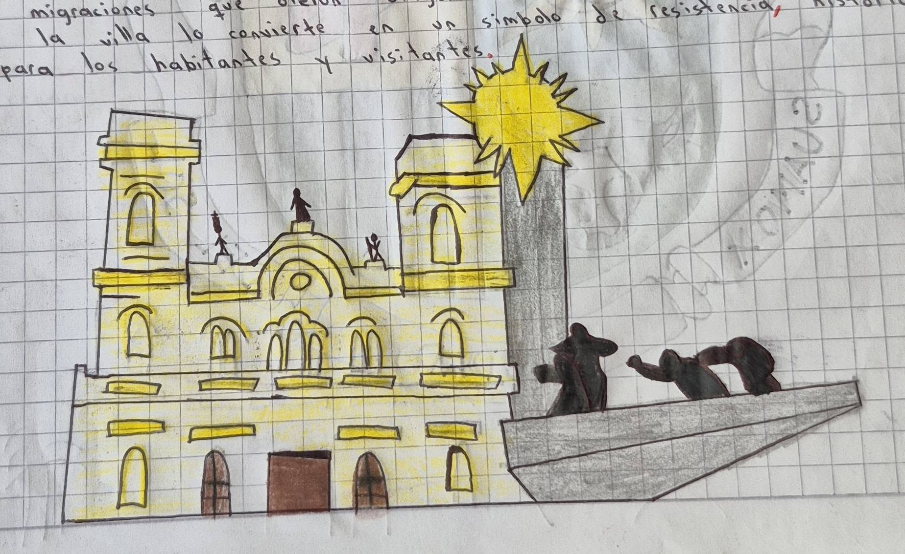

JPG
Patrimonio Arquitectónico
Fotografía de la Plaza de la Villa, patrimonio arquitectónico de Sogamoso.
Forro Estudiantil — Explora la creatividad y el talento de nuestros estudiantes a través de imágenes, videos y audios que preservan la cultura y el patrimonio de Sogamoso.
Galería multimedia con los trabajos y producciones de los estudiantes del Colegio Sugamuxi. Filtra por tipo de contenido para explorar imágenes, videos y audios.

Fotografía de la Plaza de la Villa, patrimonio arquitectónico de Sogamoso.

Registro fotográfico de las tradiciones culturales en nuestra primera estación.

Representación gráfica y simbólica de la ciudad del sol y del acero.
Documental estudiantil sobre la historia y significado del monumento del laguito. (Video de demostración listo para cargar).
Entrevistas a adultos mayores sobre las tradiciones y costumbres que marcaron su juventud.
Recorrido guiado por el mapa histórico y sus alrededores, narrando la historia de cada ruta importante.
Recopilación de relatos orales de los habitantes más antiguos de Sogamoso sobre la historia de la ciudad.
Podcast estudiantil que narra los orígenes de la cultura muisca en el territorio de Sogamoso.
Grabaciones de canciones y melodías tradicionales interpretadas por los estudiantes del colegio.